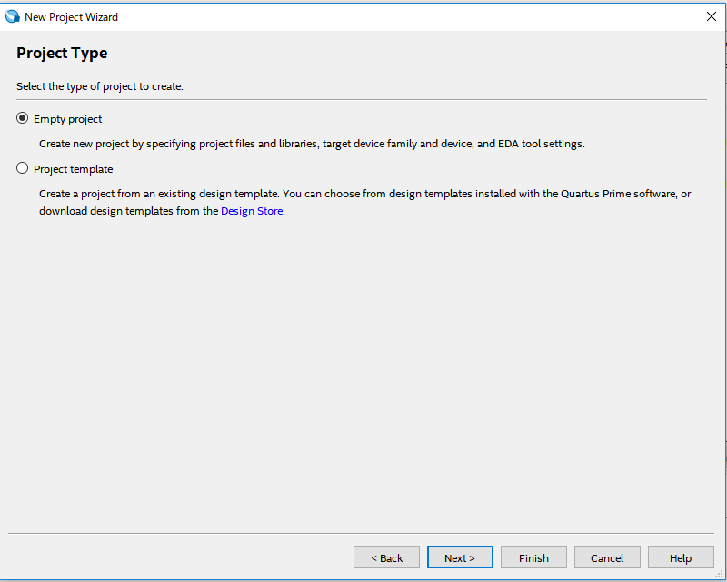
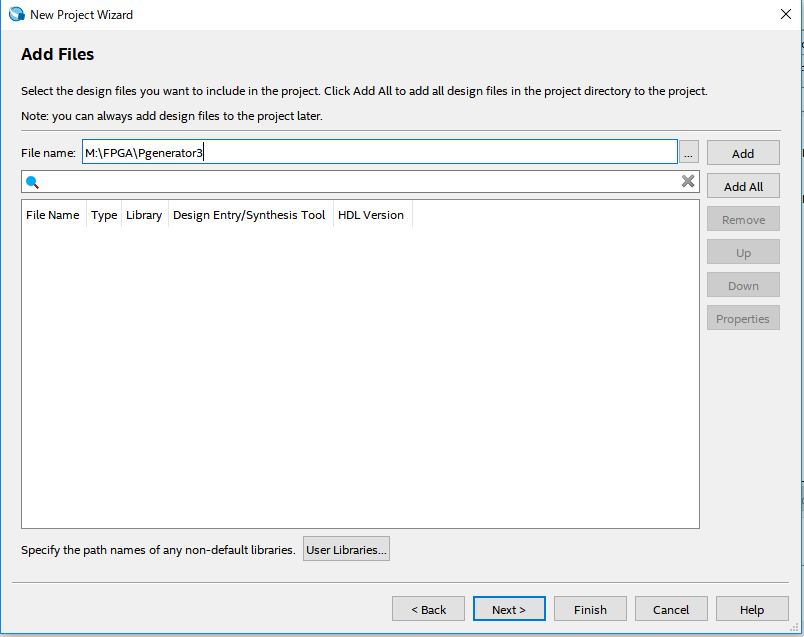
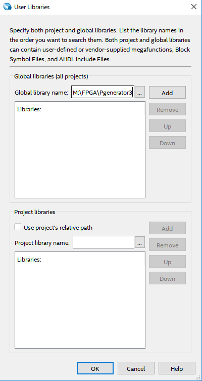

プロジェクトの登録
1.NewProjectWizardを選択
メニューバー上のFileメニューからNewProjectWizardを選択する。

2.ディレクトリ、Project名、Top-level-entity名の設定
使用するディレクトリ、プロジェクト名を空欄の上から順に設定する。
Top-level-entity名はプロジェクト名に合わせて自動で設定される。

3.Project Typeの設定
Empty projectを選択しNextを押す。
4.Add filesの設定
File nameは適宜選択し、User Librariesをクリックする。

User Libraries内でGlobal library nameの選択を行い、終わったらAddを選択。

Addを押すと以下のように表示される。
5.Deviceの設定
まず、設定メニュー内のDevice familyのFamilyとDeviceを設定する。
また、Available device内で利用するデバイスを選択した状態でNextを押す。
最後にEDA Tool SettingsはなにもしないでNextを選択し、Summaryで設定した内容を確認してfinishで終了する。
←back